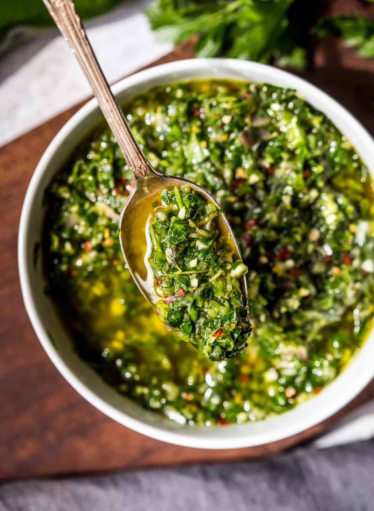

Argentinian-Style Chimichurri Sauce

Chimichurri is one of the most delicious and versatile sauces around. It's traditionally served with grilled steak or ribs and is an essential part of an Argentinian parrillada or barbecued mixed grill (see below for further definition). It goes great with chicken and fish, and is a must with grilled chorizo sausages. Chimichurri works well as a marinade and also gives a spark of flavor to vegetables.
Ingredients
- 3 to 6 coarsely chopped garlic cloves
- 2 tablespoons coarsely chopped red onion
- 2 cups coarsely chopped fresh flat-leaf parsley, firmly packed
- 1/4 cup coarsely chopped fresh cilantro, optional
- 1/4 cup coarsely chopped fresh oregano, or 1 teaspoon dried oregano, optional
- 1 tablespoon freshly squeezed lime juice, or to taste
- 2 tablespoons red wine vinegar, or to taste
- 1/2 to 3/4 cup olive oil
- Kosher salt, to taste
- Red pepper flakes, to taste
Steps
-
Gather the ingredients.
-
In a food processor, pulse the garlic and red onion until they are finely chopped.
-
Add the parsley, cilantro, and oregano, as desired. Pulse briefly, until the herbs are finely chopped.
-
Transfer the mixture to a serving bowl.
-
Stir in the lime juice, red wine vinegar, and olive oil.
-
Season with salt and red pepper flakes to taste. Store in the refrigerator, covered, until ready to serve. Enjoy.
Came back!